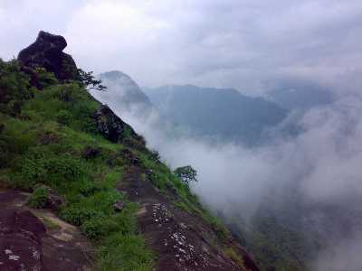

Idukki district is a densely forested, mountainous region in the south Indian state of Kerala. In the north, Anamudi mountain towers over Eravikulam National Park, where the rare, blue Neelakurinji flower blooms every 12 years. Nearby, Munnar is a hill station known for its sprawling tea plantations and Tea Museum. Farther south is the vast, curved Idukki Dam and Periyar National Park, a tiger and elephant reserve.
Though it is regarded as the second-largest district in the region, it has the lowest population density among the other districts of Kerala, the urban population being higher than the rural. Idukki is rich in forests and also known as the "Spice Garden of Kerala".
Till 1998, when Kuttampuzha was added to Ernakulam district, Idukki was the largest district in Kerala.
Hill View
With spectacular views of the Cheruthoni and Idukki Dams, the Hill-view Park serves as a famous tourist destination of Idukki. One can also spot diverse wildlife in its belt natural habitat.

Kulamav Dam
If you're a hiking or trekking junkie, Kulamavu is a hill-station that offers the perfect terrain for an adrenaline kick. With some amazing trekking trails, the place is also adorned with equally enchanting surroundings.
Idukki Arch Dam
Built across the Kuravan and Kurathi hills at a height of about 550 feet, the Idukki Arch Dam is an architectural genius, for the rugged terrain along which it is built. The natural beauty surrounding the dam is breath-taking.